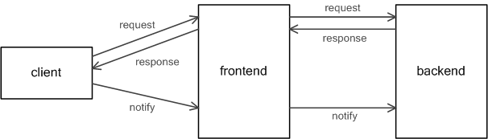
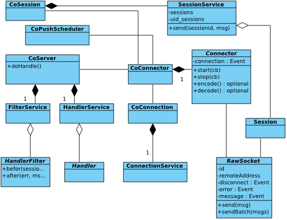
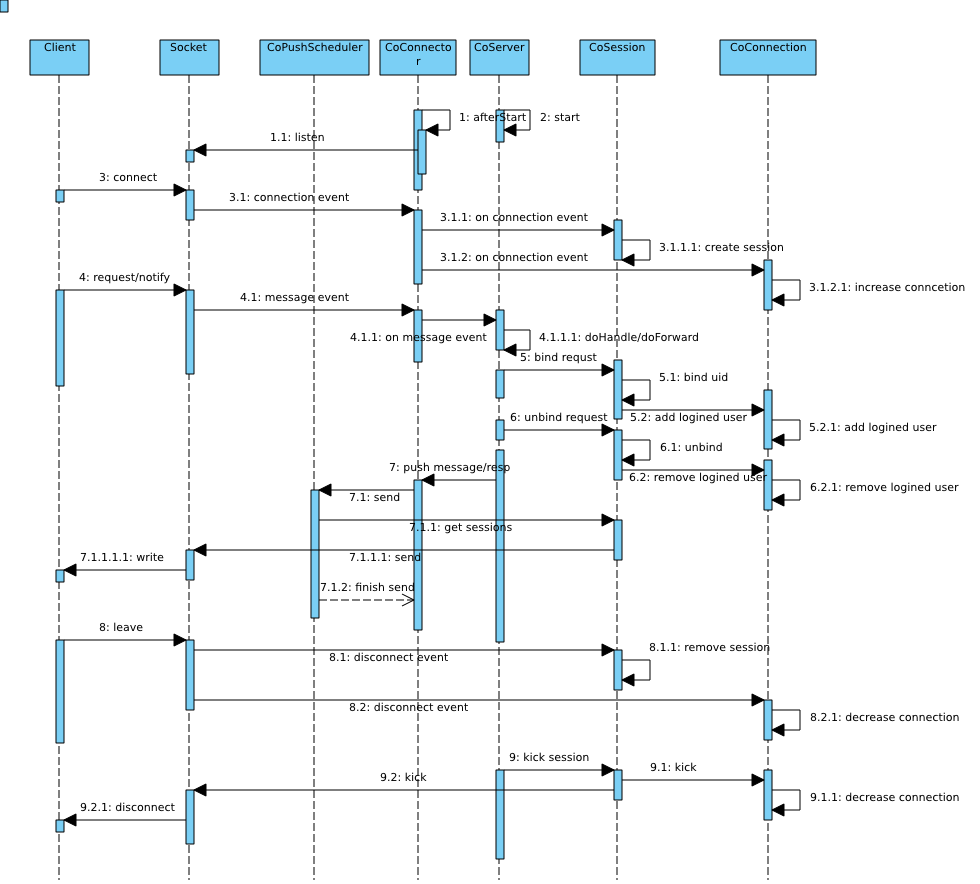
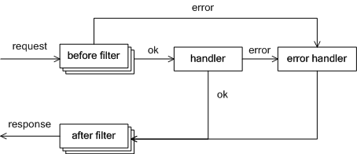

This document will introduce you how pomelo communicates with clients and how frontend servers handle user requests. The process of handling requests from clients involves a lot of components, including session component, server component, connection component, connector component, proxy component and remote component. Here, we only introduce you what the components associated with frontend server works for.
For frontend server, Session component is a component wrapper for sessionService, and is used to maintain sessions of users; Connection component is a component wrapper for connectionService, and is used to do some statistics; Connector component holds the connections from clients.
Server component will maintain the Handlers and HandlerFilters, when a request reaches frontend server, the frontend server will check whether the request is valid or not. If the request is valid and the frontend server has defined the corresponding Handler, that means the frontend server is able to handle the request, then the frontend server uses its filter-handler chain to handle it. Otherwise, the frontend server will forward the request to corresponding backend server by initiating an RPC invocation. Backend server will get the request from RPC remote, and handle it use its filter-handler chain. as shown :
The following class diagram roughly shows the relationship between these classes:
The following sequence-like diagram shows typical behavior of handling a request from client:
In afterStart callback of connector component, it will start to listen on clientPort that is configured within server configuration, then it can accept the user's connection, and bind the connector event to corresponding event handler.
In start callback of server component, it will scan Handlers and HandlerFilters that should be loaded and HandlerFilter and load them. At this time, server component is ready to accept incoming client connections and requests.
When a client connects to a frontend server, it will trigger connector's connection event. In handling the event, connection componet increases number of connection that can be used to make stastistics. And then bind close, error, disconnect, etc. events for the accepted socket. Session component will create session for the connection.
After client connection is established, the client is able to send request. The request will emit the socket's message event, In handling to this event, firstly connector will unpack the message to get route, request id(optional, notify does not have a request id), request body, and then dispatch this to server component. Server component will check whether the request is valid or not, for example, it will check existence of route, and if the request is that the frontend server can handle, typically such as a request for user loging in, then server component will use its filter-handler chain to handle it in its method doHandle. If the request route is not for the frontend server, that means frontend server can not handle the request, then server component will initiate a sys namespace RPC invocation to backend server in its doFoward method. When initiating sys namespace RPC invocation, because the same type of backend servers is always not only one, it need to make a selection to find which backend server should be forwarded. The user can configure the routing policy through app.route call, if the user does not configure it, pomelo will use a default routing policy. Backend server receives a request for RPC remote, and then it will call doHandle of its server component, same as frontend server, it will use filter-handler chain to handle the request, and then return the result to the frontend server by RPC returning. which will be responded to client by the frontend server.
Frontend server will calls the send method of connector to send message or response to clients. The responses are produced by its own handling or an RPC returning from a backend server. Send method call does not send a message through the socket directly to client, but schedule the sending task to pushscheduler component, pushscheduler component will do the last step to send message to clients based on its scheduling policy. Pomelo provids two scheduling policy, direct and buffered. direct policy means the message is immediately sent to the client, buffered policy means it will buffer the sending task and flush timely to save resource. Direct policy is default, if you want to use the buffered policy, you can enable it by:
app.set ('pushSchedulerConfig', {scheduler: pomelo.pushSchedulers.buffer, flushInterval: 20});Here, flushInterval is flushing cycle, you can also customize your own policy to meet your special demands and configure it into applications.
Typically, After establishing the connection and session, there will be a user login request to complete binding a specific user to the session. Server component will handle this when a user sends a requst to bind an user to the session, it will call session component's bind method to complete it. In addition, it will also call connection component's addLoginedUser method to increase logged user for maintaining statistics.
When an user logging out, there will be a logging out request to be sent. Usually server component will handle the request by calling SessionService's unbind method. In addition, it will also call connection component's removeLoginedUser to reduce logged user for maintaining statistics.
When a client disconnects from the frontend server, the socket corresponding to the client will emit disconnect event, in the handling to disconnect event, it will be delete the corresponding session from the SessionService, release the connection that the session maintains. In addition, it also calls ConnectionService's decreaseConnectionCount for maintaining statistics.
We have selected several typical scenarios above to illustrate the behavior of components to handle client requests. Here we pay more attention on frontend server than backend server, which will be presented in next document.
In pomelo, HandlerFilter is divided into beforeFilter and afterFilter, for beforeFilter, its method signature:
before(msg, session, next);
Where msg is request body, session represents the current request session, it is a FrontendSession at frontend server, or a BackendSession at backend server, next is a callback to continue handling. While implementing a before filter, it is required to call the next to make the handling-chain to be continue. If there is no errors in a specific before filter, then directly call next() without any arguments, otherwise, call next(err, resp), which will stop the handling-chain immediately and turn to error handling, which will respond the resp to client as a response.
Handler's signature is shown as:
<handler_Name>(msg, session, next);
msg is the request body handled by beforeFilter chain, session is the request session handled by beforeFilter chain, too. Also, next is a callback to do next step. If the handler has no errors, then calling next(null, resp), otherwise you can use the next (err, resp) to indicate an error generated in the handler. Usually, the responses to clients are produced in the handler. It is required to call next in handler implementing as well as beforeFilter.
For afterFilter, its method signature:
after(err, msg, session, resp, next);
In after filter, it will do some cleanup. If handling-chain went to after filter, the response to the clients has been sent, that means changing resp in after filter would not have any impact on client responses. Similarly, where next argument is used to do the next step of cleaning, its signature is next(err), and being defferent from handler and beforefilter above, since after filters often do some cleaning and do impact what to respond to clients, the processing of after filter will no longer be sensitive for err, all the after filter chain will be executed one by one anyway.
ErrorHandler, is used to handle exception if there are errors generated in before filter or handler, its signature:
<errorHandler_Name> (err, msg, resp, session, cb);
Whether in handler or before filter, if an error generated, it will turn to ErrorHandler immediately, its arguments have the same meaning as introduced above, where resp is passed by next(err, resp) call, cb is a callback and its signature cb(err, resp), cb will send resp to clients. So, it is required to call cb(err,resp) in implementing an ErrorHandler, otherwise, the client will not receive the response. In errorHandler, it can re-produce resp to clients according to err, resp and other information that have been passed as arguments. You can configure a globally customized ErrorHandler by:
var errorHandler = require ('<path>');
app.set('errorHandler', errorHandler);
If users do not configure a global ErrorHandler, then default ErrorHandler will sent the resp produced by beforeFilters or Handler directly without any manipulating. Roughly the entire request handling-chain process is shown as follows :
Pomelo provides some builtin filters for common use, users can enable them by:
app.filter(pomelo.filters.<filterName>(<args>));
This filter is used to do serialization of user requests, and it can make requestes from a certain session to be handled one by one in the same order as their being sent. It uses a serial taskManager, when a request comes in, in the beforeFilter, it will put the request into taskManager with session.id as key, taskManager maintains a map for all session. In the corresponding afterFilter, if there is a pending request in its taskManager, it will be handled. As so, it implements the task serialization.
This filter is used for warning there is a timeout in handling a request. It will start a timer in its beforeFilter and clear it in its afterFilter. If afterFilter is called before the timer expiring, that means no timout occurs, the timer will be cleared in afterFilter. If the timer expires, but afterFilter is not yet called, that means a timeout occurs and a warning is thrown out and logged. The default timeout is 3 seconds, but you can configure it while loading it.
The filter is used to record handling time. In beforeFilter, it will record a timestamp, In afterFilter it will record a timestamp too. and then subtract two timestamps to get the handling time, and then log it.
This filter is used to detected whether node.js event loop is busy or not. Once toobusy is triggered, then the filter toobusy will refuse sequential requests, and call next(err, resp) to pass err to error handler, indicating that server is too busy.
In this document, it describes how frontend server to communicate with clients by introducing the relationship between related classes, as well as their behaviors of typical scenarios. It presents detail of before filter, handler, after fitler, error handler, and so on. Finally, it introduces the builtin filters that pomelo provides.